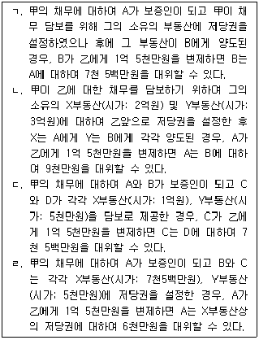
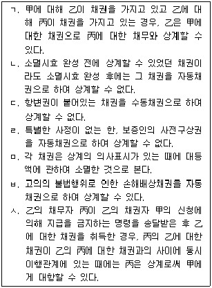

변리사-1차(2교시) (2011-02-27 기출문제)
1. 대리권의 범위에 관한 설명 중 옳은 것은? (다툼이 있는 경우에는 판례에 의함)
- 계약체결에 관한 대리권을 수여받은 대리인이 수권된 매매계약을 체결하였다면, 그 대리인은 그 계약을 해제한다는 상대방의 의사표시를 수령할 권한도 있다.
- 매수인을 대리하여 부동산을 매수할 권한을 수여받은 대리인에게는 특별한 사정이 없는 한 그 부동산을 제3자에게 매도할 권한도 있다.
- 부동산에 대한 매매계약의 체결과 이행에 관하여 포괄적으로 대리권을 수여받은 대리인은 특별한 사정이 없는 한 약정된 매매대금의 지급기일을 연기하여 줄 권한도 있다.
- 예금계약의 체결을 위임받은 자가 가지는 대리권에는 당연히 그 예금을 담보로 하여 대출을 받거나 기타 이를 처분할 수 있는 권한이 포함되어 있다.
- 채무 담보의 목적으로 채무자를 대리하여 채무자의 부동산을 매도할 권한을 위임받은 채권자는, 그 부동산의 가치를 임의로 평가하여 자신의 채권자에게 대물변제할 권한도 있다.
(정답률: 알수없음)

2. 권리능력에 관한 설명 중 옳은 것은? (다툼이 있는 경우에는 판례에 의함)
- 불법행위로 인하여 태아가 사산된 경우, 태아의 父는 자신의 손해배상청구권과 태아의 손해배상청구권을 함께 취득한다.
- 사망의 증거가 있다면, 재난으로 인한 사망사실을 조사한 관공서의 통보가 없더라도 법원이 직권으로 사망의 사실을 인정할 수 있다.
- 甲이 태아인 상태에서 父가 乙의 불법행위에 의해서 장애를 얻었다면, 살아서 출생한 甲은 乙에 대하여 父의 장애로 인한 자신의 정신적 손해에 대한 배상을 청구할 수 없다.
- 태아의 母가 태아를 대리하여 증여자와 증여계약을 체결한 경우에 태아가 살아서 출생하면 증여계약상의 권리를 주장할 수 있다.
- 법인의 권리능력은 설립근거가 된 법률과 정관에서 정한 목적범위 내로 제한되며, 그 목적을 수행함에 있어서 간접적으로 필요한 행위에 대해서는 권리능력이 인정되지 않는다.
(정답률: 알수없음)
3. 미성년자가 체결한 계약의 효력에 관한 설명 중 옳은 것은? (다툼이 있는 경우 에는 판례에 의함)
- 의사능력 있는 미성년자가 타인으로부터 대리권을 수여받아 부모의 동의 없이 매매계약을 체결한 경우에는 행위무능력을 이유로 그 대리행위를 취소할 수 있다.
- 미성년자가 법정대리인의 동의를 얻지 않고 체결한 계약은 미성년인 본인이 취소할 수도 있고 추인할 수도 있다.
- 미성년자가 매매계약을 체결한 후에 미성년인 상태에서 매매대금의 이행을 청구하고 대금을 모두 지급받았다면 법정대리인은 매매계약을 취소할 수 없다.
- 미성년자 甲이 법정대리인의 동의없이 자신이 소유한 토지를 매도한 후 사망함으로써 乙이 甲을 단독으로 상속하였다면 乙은 매매계약을 취소할 수 있다.
- 법정대리인이 미성년자에게 일정한 범위 내에서 재산을 임의로 처분할 수 있도록 하는 허락은 명시적으로 행해져야 한다.
(정답률: 알수없음)
4. 법인의 불법행위능력에 관한 설명 중 옳은 것은? (다툼이 있는 경우에는 판례에 의함)
- 법인의 대표자가 직무에 관해서 불법행위를 한 경우, 피해자는 민법 제35조(법인의 불법행위능력)에 따른 손해배상청구나 민법 제756조(사용자의 배상책임)에 따른 손해배상청구를 할 수 있다.
- 법인 대표자의 직무행위로 타인에게 손해가 발생한 경우에 그러한 직무행위가 법령의 규정에 위배된 것이었다고 하더라도 법인의 불법행위책임이 성립할 수 있다.
- 법인 대표자의 직무에 관한 불법행위에 있어서 그 직무행위가 대표자 개인의 이익을 도모하기 위한 것이라는 점을 피해자가 알지 못하였다면 그에 대한 과실여부와 상관없이 법인의 불법행위책임을 주장할 수 있다.
- 대표권 없는 이사의 직무에 관한 불법행위의 경우에도 법인의 불법행위책임에 관한 민법 제35조(법인의 불법행위능력)가 적용된다.
- 권리능력 없는 사단의 경우에는 대표자의 직무로 인한 불법행위에 대하여 민법 제35조(법인의 불법행위능력)가 유추적용될 수 없다.
(정답률: 알수없음)
5. 다음 중 표현대리가 성립할 수 있는 경우는? (단, 丙은 선의ㆍ무과실이고, 다툼이 있는 경우에는 판례에 의함)
- 甲이 乙에게 甲소유의 토지를 처분할 권한을 부여하였는데, 乙은 甲이 수권행위를 철회한 후에 丁을 복대리인으로 선임하였고, 丁은 丙과 그 토지에 관한 매매계약을 체결하였다.
- 甲소유의 자동차에 대한 매도권한을 수여받은 乙은 상대방인 丙과 계약을 체결하면서 현명하지 않았지만, 丙은 乙이 甲의 대리인이라는 것을 알고 있었다.
- 임대차 계약체결을 위한 대리권을 甲으로부터 수여받은 乙이 甲인 것처럼 행세하여 甲의 이름으로 丙과 임대차계약을 체결하였는데, 丙은 乙을 甲이라고 생각하였다.
- 甲은 乙에게 저당권설정을 위한 대리권을 수여하였는데, 乙은 자신의 명의로 소유권이전등기를 한 후에 丙에게 저당권을 설정해 주었다.
- 甲이 관련 서류를 위조하고 丁을 남편으로 가장시켜 남편인 乙소유의 부동산을 담보로 丁이 丙은행으로부터 대출받았는데, 丙은 丁을 乙이라고 생각하였다.
(정답률: 알수없음)
6. 사기에 의한 법률행위에 관한 설명 중 옳은 것은? (다툼이 있는 경우에는 판례에 의함)
- 표의자가 상대방의 기망행위로 인해 법률행위의 동기에 관하여 착오를 일으킨 경우에는 사기를 이유로 그 법률행위를 취소할 수 있다.
- 매도인의 피용자가 기망행위를 하여 계약이 체결된 경우, 매수인은 매도인이 피용자의 기망행위를 과실 없이 알지 못한 경우에도 사기를 이유로 매매계약을 취소할 수 있다.
- 매도인이 매수인의 기망행위를 이유로 계약을 취소한 경우에 그 기망행위가 불법행위에 해당한다면 매도인은 부당이득반환과 불법행위로 인한 손해배상을 중첩적으로 청구할 수 있다.
- 매도인이 사기를 이유로 토지매매계약을 취소한 후에 제3자가 취소의 사실을 모르고 매수인으로부터 그 토지의 소유권을 취득하였다면, 그러한 제3자는 보호받지 못한다.
- 사기를 이유로 매매계약이 취소된 경우에, 매수인으로부터 부동산을 취득한 제3자가 자신이 선의임을 증명하지 못한다면, 매도인은 제3자에게 취소의 효과를 주장할 수 있다.
(정답률: 알수없음)
7. 甲은 乙의 범죄사실을 고발하겠다고 乙을 협박하였고, 乙은 이를 무마하기 위해서 자신이 소유하는 X토지를 甲에게 증여하기로 하였다. 이에 대한 설명 중 옳은 것은? (다툼이 있는 경우에는 판례에 의함)
- 乙은 증여의사 흠결에 따른 증여계약의 무효나 강박을 이유로 한 취소를 주장할 수 있을 뿐이며, 증여계약이 반사회질서의 법률행위로서 무효라는 주장을 할 수 없다.
- 乙이 甲의 협박 때문에 X토지를 증여한다는 의사표시를 한 것이라면 乙의 증여의 의사표시는 비진의표시에 해당한다.
- 乙이 甲의 강박에 의해 증여하기로 한 사실만으로도 甲이 乙에게 X토지의 소유권이전등기청구를 하는 것은 권리남용에 해당한다.
- 증여계약이 甲의 강박에 의해서 이루어진 것이라면 乙은 그 증여계약이 불공정한 법률행위임을 주장할 수 있다.
- 증여계약이 강박에 의한 것이어서 무효라는 乙의 주장은 증여계약을 취소한다는 의사표시를 당연히 포함한다.
(정답률: 알수없음)
8. 甲은 X토지와 그 위의 Y건물을 소유하고 있다. 무권대리인인 乙이 甲명의로 丙과 X토지와 Y건물에 대한 매매계약을 체결한 후 서류를 위조하여 등기도 이전해 주었다. 이에 관한 설명 중 옳지 않은 것은? (다툼이 있는 경우에는 판례에 의함)
- 丙이 계약 당시에 乙에게 대리권이 없음을 알았다면 甲이 무권대리행위를 추인하기 전이라도 丙은 매매계약을 철회할 수 없다.
- 甲이 乙에게 무권대리행위를 추인하는 의사표시를 하였더라도, 그러한 추인이 있었음을 알지 못하는 丙은 매매계약을 철회할 수 있다.
- 甲이 Y건물의 매매계약에 대해서만 추인을 한 경우에 丙이 동의하지 않는다면 그러한 추인은 추인으로서 효력이 없다.
- 丙이 계약체결시에 乙이 무권대리인이라는 사실을 알았다면, 丙은 甲에게 무권대리행위의 추인 여부를 최고할 수 없다.
- 乙이 甲을 단독으로 상속한 후, 甲의 지위에서 매매계약이 대리권 없이 체결되었음을 이유로 무효라고 주장하는 것은 신의성실의 원칙에 반한다.
(정답률: 알수없음)
9. 법률행위의 취소에 관한 설명 중 옳지 않은 것은? (다툼이 있는 경우에는 판례에 의함)
- 기망행위에 의해 소비대차계약을 체결하고 이를 담보하기 위해 근저당권을 설정한 경우, 기망행위를 이유로 하는 근저당권설정계약의 취소의 효력은 소비대차계약에도 미친다.
- 채무자가 사기를 당했음을 알지 못하고 채권자에게 계약상의 채무 전부를 이행한 경우에는 그 계약을 추인한 것으로 볼 수 없다.
- 취소의 원인이 종료한 후에 취소된 계약을 다시 추인하게 되면 취소된 법률행위가 계약체결시에 소급하여 유효한 것으로 된다.
- 취소권을 행사하기 위해서는 취소권의 존속기간 내에 취소의 의사표시를 하면 충분하고, 취소에 따른 소송을 그 기간 내에 제기해야 하는 것은 아니다.
- 추인할 수 있는 날로부터 3년 이후에 취소권이 행사되었다면, 당사자가 이를 주장하지 않더라도 법원은 직권으로 취소권 행사가 무효라는 판단을 해야 한다.
(정답률: 알수없음)
10. 甲은 자신의 소유인 X건물에 대해서 乙과 매매계약을 체결하면서, “丙이 사망하면 매매계약의 효력이 발생하고 그 때 곧바로 매매대금을 지급함과 동시에 소유권이전등기를 해주기로 한다.”는 약정을 하였다. 이에 관한 설명 중 옳은 것은?
- 甲과 乙이 체결한 매매계약은 정지조건부 계약이다.
- 丙이 사망하면 매매계약은 甲과 乙이 계약을 체결한 시점으로 소급하여 그 효력이 발생한다.
- 甲은 丙이 사망하기 전에는 매매대금채권을 제3자에게 양도하거나 담보로 제공할 수 없다.
- 丙이 사망하기 전에 甲이 X건물의 소유권을 제3자에게 이전한 경우에 乙은 甲에게 X건물을 취득하지 못함으로 인한 손해배상을 청구할 수 있다.
- 甲이 丙의 사망사실을 알게 된 시점부터 甲의 매매대금채권의 소멸시효가 진행된다.
(정답률: 알수없음)
11. 소멸시효의 중단사유에 관한 설명 중 옳은 것은? (다툼이 있는 경우에는 판례에 의함)
- 물상보증인이 피담보채무의 부존재 또는 소멸을 이유로 제기한 저당권설정등기말소등기절차이행청구소송에서, 채권자 겸 저당권자가 청구기각의 판결을 구하고 그 피담보채권의 존재를 주장하였다면, 이는 재판상 청구로서 소멸시효 중단사유에 해당한다.
- 원인채권의 지급을 확보하기 위하여 어음이 수수된 당사자 사이에서 채권자가 이미 시효로 소멸된 어음채권을 청구채권으로 하여 채무자의 재산을 압류하면, 이로써 그 원인채권의 소멸시효는 중단된다고 보아야 한다.
- 채권양도 후 대항요건이 구비되기 전에 양도인이 채무자를 상대로 채무이행을 청구하는 소송을 하던 중, 채무자가 채권양도의 효력을 인정하는 등의 사정으로 인하여 양도인의 청구가 기각되었더라도, 양수인이 그로부터 6월 이내에 채무자를 상대로 재판상의 청구 등을 하였다면 양도인의 최초의 재판상 청구로 인하여 소멸시효가 중단된다.
- 아파트입주자대표회의가 직접 하자보수에 갈음한 손해배상청구의 소를 제기하였다가 구분소유자들로부터 손해배상채권을 양도받아 양수금 청구를 하는 것으로 청구원인을 변경한 경우, 손해배상청구권에 대한 소멸시효 중단의 효과는 소를 제기한 때에 소급하여 발생한다.
- 권리자인 피고가 응소하여 권리를 주장하였으나 그 소가 각하되거나 취하되는 등의 사유로 본안에서 그 권리주장에 관한 판단 없이 소송이 종료된 경우에는 그때부터 6월 이내에 재판상의 청구 등 다른 시효중단조치를 취하여도 시효중단의 효력이 생기지 않는다.
(정답률: 알수없음)
12. 소멸시효에 관한 설명 중 옳지 않은 것은? (다툼이 있는 경우에는 판례에 의함)
- 부동산의 점유취득시효완성자가 점유를 상실한 경우, 그 때로부터 소유권이전등기청구권의 소멸시효가 진행한다.
- 부동산의 매수인이 그 부동산을 인도받아 사용ㆍ수익하다가 다른 사람에게 처분하고 그 점유를 승계하여 주었다면 그때부터 매도인에 대한 이전등기청구권의 소멸시효가 진행한다.
- 명의신탁의 해지로 인한 명의신탁자의 등기말소청구권은 소멸시효의 대상이 되지 않는다.
- 피담보채무의 소멸을 이유로 하는 양도담보권자에 대한 소유권이전등기청구권은 소멸시효의 대상이 되지 않는다.
- 토지매매계약에 따라 소유권이 이전된 경우, 계약의 합의해제에 따른 매도인의 원상회복청구권은 소멸시효의 대상이 되지 않는다.
(정답률: 알수없음)
13. 甲이 乙소유의 X부동산을 양수하여 소유권이전등기를 마쳤는데, 소유권이전 당시 X부동산에는 乙을 채무자로 하여 채권자 丙의 제1순위 근저당권과 채권자 丁의 제2순위 근저당권이 설정되어 있었다. 다음 설명 중 옳지 않은 것은? (다툼이 있는 경우에는 판례에 의함)
- 甲은 X부동산의 경매절차에서 매수인(경락인)이 될 수 있다.
- 丙의 확정된 피담보채권액이 채권최고액을 초과하는 경우, 甲은 丙의 채권최고액만을 변제하고 丙의 근저당권의 소멸을 청구할 수 있다.
- 丙의 확정된 피담보채권액이 채권최고액을 초과하는 경우, 丁은 丙의 채권최고액만을 변제하고 丙의 근저당권의 소멸을 청구할 수 없다.
- 甲이 X부동산의 보존과 개량을 위하여 필요비나 유익비를 지출한 경우, 甲은 근저당권 실행으로 인한 X부동산의 매수인(경락인)에 대하여 유치권을 행사할 수 있으나 X부동산의 매각대금으로부터 우선상환을 받을 수는 없다.
- 甲이 X부동산을 양수하면서 丙의 근저당권에 대한 피담보채무를 면책적으로 인수한 경우에는 丙에 대한 피담보채무액 전부를 변제하지 않으면 丙의 근저당권의 소멸을 청구할 수 없다.
(정답률: 알수없음)
14. 甲은 乙에게 1억 5천만원을 빌려주고, 이 금전채권을 담보하기 위해 乙소유의 X부동산(시가: 2억원), 丙소유의 Y부동산(시가: 1억원) 위에 각각 1순위의 저당권을 취득하였다. 그런데 乙이 채무를 이행하지 않아 甲의 저당권 실행으로 X부동산은 1억 2천만원, Y부동산은 8천만원에 동시에 매각(경락)되었다. 甲은 X와 Y부동산의 매각대금으로부터 각각 얼마씩 배당받을 수 있는가? (단, 실행비용 등은 고려하지 않으며, 다툼이 있는 경우에는 판례에 의함)
- X부동산: 7,500만원, Y부동산: 7,500만원
- X부동산: 9,000만원, Y부동산: 6,000만원
- X부동산: 9,500만원, Y부동산: 5,500만원
- X부동산: 1억원, Y부동산: 5,000만원
- X부동산: 1억 2,000만원, Y부동산: 3,000만원
(정답률: 알수없음)
15. 乙은 적법한 권원 없이 甲소유의 물건을 점유하면서 비용을 지출하였고, 그 후 甲은 乙에 대해 그 물건의 반환을 청구하였으며, 乙이 그 물건으로부터 취득한 과실은 없다. 다음 설명 중 옳지 않은 것은? (다툼이 있는 경우에는 판례에 의함)
- 乙이 악의의 점유자인 경우에는 지출한 필요비의 상환을 청구할 수 없다.
- 乙이 그 물건을 사용하면서 마모된 부품을 교체하는데 비용을 지출하였다면 그 비용은 필요비에 해당한다.
- 乙이 책임 있는 사유로 그 물건을 훼손한 경우, 乙이 악의의 점유자라면 그 손해의 전부를 배상하여야 한다.
- 乙이 유익비를 지출한 때에는 그 가액의 증가가 현존한 경우에 한하여 甲의 선택에 따라 그 지출금액이나 증가액의 상환을 청구할 수 있다.
- 만약 乙의 점유가 불법행위에 의해 개시되었다면, 乙이 지출한 유익비의 상환청구권을 기초로 하는 乙의 유치권은 인정되지 않는다.
(정답률: 알수없음)
16. 2011년 개시된 부동산경매절차를 통해 丙소유의 X부동산을 매수하려는 甲은 乙과, “甲이 매각대금을 부담하고, 乙이 경매에 참가하여 매각받기로 한다.”는 내용의 명의신탁약정을 체결하였고, 이 약정에 따라 乙은 매각허가결정을 받아 X부동산의 소유권이전등기를 마쳤다. 다음 설명 중 옳은 것은? (다툼이 있는 경우에는 판례에 의함)
- 甲과 乙사이의 명의신탁약정은 유효하다.
- 丙은 乙에 대해 소유권이전등기의 말소를 청구할 수 없다.
- 대내적으로는 甲이 X부동산의 소유자이나 대외적으로는 乙이 소유자이다.
- 乙이 명의신탁사실을 알고 있는 丁에게 X부동산을 처분하였다면, 丁은 그 소유권을 취득할 수 없다.
- 甲은 명의신탁약정의 해지를 이유로 乙에게 진정명의회복을 위한 X부동산의 소유권이전등기를 청구할 수 있다.
(정답률: 알수없음)
17. 甲은 자기 소유의 부동산을 乙에게 매도하였고, 乙은 자기 명의로의 소유권이전등기 없이 丙에게 전매하였다. 다음 설명 중 옳지 않은 것은? (다툼이 있는 경우에는 판례에 의함)
- 甲, 乙, 丙3자간에 甲으로부터 丙으로 소유권이전등기를 하기로 하는 합의가 있다면, 丙이 직접 甲에 대하여 소유권이전등기를 청구할 수 있다.
- 일단 甲에서 직접 丙앞으로 소유권이전등기가 경료되었다면 甲, 乙, 丙3자간의 중간생략등기의 합의가 없었다는 이유만으로 무효가 되지 않는다.
- 甲, 乙, 丙3자간에 중간생략등기의 합의가 있더라도 乙의 甲에 대한 소유권이전등기청구권이 소멸하는 것은 아니다.
- 甲, 乙, 丙3자간 중간생략등기의 합의 후에 甲과 乙이 그들 사이의 매매계약을 합의해제하였더라도 甲은 丙의 소유권이전등기청구를 거절할 수 없다.
- 甲, 乙, 丙3자간 중간생략등기의 합의 후 甲과 乙사이에 매매대금을 인상하기로 하는 합의가 있는 경우, 甲은 인상된 매매대금이 지급되지 않았음을 이유로 丙의 소유권이전등기청구를 거절할 수 있다.
(정답률: 알수없음)
18. 甲소유의 X토지에 乙명의로 소유권이전청구권 보전을 위한 가등기가 설정되어 있다. 다음 설명 중 옳은 것은? (다툼이 있는 경우에는 판례에 의함)
- 乙은 가등기된 소유권이전청구권을 가등기에 대한 부기등기의 방법으로 타인에게 양도할 수 없다.
- 乙이 가등기에 기한 본등기를 하면 乙은 가등기를 경료한 때부터 X토지에 대한 소유권을 취득한다.
- 가등기가 있으면 乙이 甲에 대한 소유권이전등기를 청구할 법률관계가 있는 것으로 추정된다.
- 乙의 가등기보다 선순위의 담보권이나 가압류 등이 없는 경우에도 X토지가 경매절차에서 제3자에게 매각되면 가등기는 소멸한다.
- 丙이 X토지의 소유권을 양도받은 후 乙명의의 가등기가 불법으로 말소된 경우, 乙은 丙을 상대로 가등기의 회복등기청구를 하여야 한다.
(정답률: 알수없음)
19. 점유의 추정력에 관한 설명 중 옳은 것은? (다툼이 있는 경우에는 판례에 의함)
- 점유자는 소유의 의사로 평온ㆍ공연하게 선의ㆍ무과실로 점유한 것으로 추정된다.
- 전후 양 시점의 점유자가 다르더라도 점유의 승계가 증명된다면 점유가 계속된 것으로 간주된다.
- 선의의 점유자라 하더라도 본권에 관한 소에 패소한 때에는 패소한 때로부터 악의의 점유자로 본다.
- 점유자의 권리추정의 규정은 특별한 사정이 없는 한 동산 및 부동산 물권에 적용된다.
- 자주점유의 증명책임이 점유자에게 있지 않는 한, 점유자가 주장하는 자주점유의 권원이 인정되지 않는다는 사유만으로 자주점유의 추정이 번복되는 것은 아니다.
(정답률: 알수없음)
20. 甲과 乙이 X건물을 공유하고 있는 경우에 관한 설명으로 옳은 것은? (다툼이 있는 경우에는 판례에 의함)
- 3분의 1 지분권자 乙은 甲의 동의 없이 자신의 지분을 丙에게 처분하지 못한다.
- 3분의 1 지분권자 乙이 甲의 동의 없이 X건물을 丙에게 임대한 경우, 그 임대차계약은 효력이 없다.
- 丙이 X건물을 불법점유하고 있는 경우, 甲은 乙의 지분에 관하여도 특별한 사정이 없는 한 단독으로 丙에 대하여 손해배상을 청구할 수 있다.
- X건물의 임대인 甲이 대항력 있는 임차인에게 계약갱신을 거절하려면 공유지분의 과반수로써 결정하여야 한다.
- 3분의 2 지분권자 甲이 乙의 동의 없이 X건물 전부를 丙에게 사용하게 한 경우, 乙은 丙에 대하여 3분의 1 지분만큼의 X건물의 인도를 청구할 수 있다.
(정답률: 알수없음)
21. 乙은 등기서류를 위조하여 甲소유의 X토지를 자신의 명의로 이전등기한 후 그 토지 위에 Y건물을 신축하였으나 소유권보존등기는 하지 않았다. 乙로부터 X토지와 Y건물을 매수한 丙은 X토지에 대한 소유권이전등기는 하였으나 Y건물은 미등기인 채로 현재까지 점유하고 있다. 다음 설명 중 옳은 것은? (다툼이 있는 경우에는 판례에 의함)
- 丙은 Y건물의 소유를 위한 관습상 법정지상권을 취득한다.
- 甲은 丙을 상대로 Y건물의 철거를 청구할 수 없다.
- 丙이 선의ㆍ무과실인 경우에도 X토지에 대한 소유권을 선의취득할 수 없다.
- 甲은 丙에 대하여 X토지에 대해 진정명의회복을 위한 소유권이전등기를 청구할 수 없다.
- X토지의 소유권은 특별한 사정이 없는 한 丙에게 있다.
(정답률: 알수없음)
22. 甲은 乙에게 자신의 토지에 전세권을 설정해 주고, 丙은 乙의 전세권 위에 저당권을 취득하였다. 그 후 전세권은 존속기간의 만료로 종료되었다. 다음 설명 중 옳은 것은? (다툼이 있는 경우에는 판례에 의함)
- 丙은 乙이 채무를 이행하지 않으면 전세권 자체에 대해 저당권을 실행할 수 있다.
- 전세권 설정등기의 말소등기가 없더라도, 전세권의 용익물권적 권능은 소멸한다.
- 丙이 乙의 전세금반환채권을 압류하더라도 전세금반환채권으로부터 우선변제를 받을 수 없다.
- 乙이 이미 목적물을 반환하였다면 甲은 등기말소에 필요한 서류를 반환받지 못하였다고 하여 전세금의 반환을 거절할 수는 없다.
- 乙로부터 채무를 변제받지 못한 丙은 乙의 전세금반환채권을 목적으로 하는 질권을 취득한다.
(정답률: 알수없음)
23. 유치권에 관한 설명 중 옳지 않은 것은? (다툼이 있는 경우에는 판례에 의함)
- 채권자가 채무자의 직접점유를 통하여 간접점유를 하고 있는 물건에 대해서는 유치권이 성립하지 않는다.
- 유치물을 점유하기 전에 그것으로부터 발생된 채권이라도 그 후 유치권자가 그 물건의 점유를 취득했다면 유치권은 성립한다.
- 임대인과 임차인 사이에 건물명도시 권리금을 반환하기로 하는 약정이 있었다 하더라도 그와 같은 채권을 가지고 건물에 대한 유치권을 행사할 수 없다.
- 다세대주택의 창호 등의 공사를 완성한 수급인이 공사대금채권의 변제를 받기위하여 다세대주택 중 한 세대를 점유한 경우, 다세대주택 전체에 대하여 시행한 공사대금채권 전부를 피담보채권으로 하는 유치권이 성립할 수 있다.
- 수급인은, 그가 완공하여 원시취득한 건물에 관하여 도급인에 대한 소유권이전 및 인도의무를 지고 있는 경우에도, 도급인으로부터 공사대금을 지급받을 때까지 유치권을 행사할 수 있다.
(정답률: 알수없음)
24. 乙은 甲소유의 X토지를 무단으로 점유하면서 그 토지에 Y주택을 신축하여 소유하고 있다. 다음 설명 중 옳지 않은 것은? (다툼이 있는 경우에는 판례에 의함)
- 甲은 乙에 대해 X토지의 점유로 인한 부당이득반환을 청구할 수 있다.
- 甲은 乙에 대해 불법행위로 인한 손해배상을 청구할 수 있다.
- 甲은 乙에 대해 Y주택의 철거 및 X토지의 인도를 청구할 수 있다.
- 丙이 乙로부터 Y주택에 대한 전세권을 설정받은 경우에도 乙은 X토지에 대한 법정지상권을 취득하지 못한다.
- Y주택의 점유자가 주택임대차보호법상 대항력 있는 임차인인 경우에는 甲은 그 임차인의 퇴거를 청구할 수 없다.
(정답률: 알수없음)
25. 甲은 乙에게 1억 5천만원의 채무를 부담하고 있다. 이를 담보하기 위한 보증인 사이의 구상관계에 대한 설명으로 옳은 것만을 모두 고른 것은?

- ㄱ, ㄴ
- ㄱ, ㄷ
- ㄴ, ㄷ
- ㄴ, ㄹ
- ㄷ, ㄹ
(정답률: 알수없음)
26. 甲(채권자), 乙(채무자), 丙(인수인) 사이의 채무인수에 관한 설명으로 옳은 것은? (다툼이 있는 경우에는 판례에 의함)
- 乙과 丙사이의 약정에 의한 면책적 채무인수가 성립한 경우, 丙은 乙이 甲에게 항변할 수 있었던 사유로 甲에게 대항할 수 없다.
- 乙과 丙사이의 약정에 의한 면책적 채무인수가 성립한 경우, 乙이 甲에 대한 채무를 담보하기 위해 설정한 저당권은 특별한 사정이 없는 한 채무인수로 인하여 소멸한다.
- 乙과 丙사이에 면책적 채무인수에 관한 약정이 있었던 경우, 乙또는 丙은 상당한 기간을 정하여 승낙 여부의 확답을 甲에게 최고할 수 있고, 甲이 그 기간내에 확답을 발송하지 않은 때에는 승낙한 것으로 본다.
- 甲과 丙사이에 중첩적 채무인수 계약이 체결된 경우에도 그것이 乙의 의사에 반하면 허용되지 않는다.
- 丙이 乙의 甲에 대한 채무의 이행을 인수한 경우, 丙은 乙에 대하여만 변제의무를 부담할 뿐, 직접 甲에 대하여 채무를 부담하지는 않는다.
(정답률: 알수없음)
27. 甲은 자기 소유의 토지를 乙에게 매도하고 대금까지 모두 받았으나, 아직까지 자신이 등기명의인임을 기화로 이를 丙에게 매도하고 소유권이전등기까지 마쳐주었다. 乙은 丙앞으로 소유권이전등기가 마쳐지기 전에 이미 위 토지에 대하여 丁과 매매계약을 체결하였다. 甲은 乙과 1억원에 매매계약을 체결하였으나, 甲이 丙에게 소유권을 넘겨줄 당시의 토지의 시가는 1억 2천만원이었으며, 乙은 丁과 1억 3천만원에 매매계약을 체결하였다. 다음 설명 중 옳지 않은 것은? (다툼이 있는 경우에는 판례에 의함)
- 甲의 乙에 대한 소유권이전등기의무는 甲과 丙사이에 매매계약이 체결된 시점이 아니라 丙에게 소유권이전등기가 마쳐진 시점에서 이행불능이 되었다.
- 乙은 계약을 해제함과 함께 손해배상을 청구할 수 있다.
- 乙이 전보배상으로 청구할 수 있는 손해액은 원칙적으로 1억 2천만원 상당이다.
- 불능 당시의 시가를 초과하는 이익인 1천만원에 대해서는 甲이 그 사정을 알았던 경우에도 배상책임이 없다.
- 丙이 甲ㆍ乙사이에 매매계약이 체결된 사실을 모르고 소유권을 이전받은 경우, 丁은 乙을 대위하여 丙명의의 소유권등기의 말소를 청구할 수 없다.
(정답률: 알수없음)
28. 채권자대위권에 관한 설명으로 옳은 것은? (다툼이 있는 경우에는 판례에 의함)
- 乙에 대해서는 소유권이전등기절차의 이행을, 丙에 대해서는 乙을 대위하여 말소등기절차의 이행을 청구하는 소송에서 乙에 대해 甲이 승소한 경우에도 丙은 그 소유권이전등기청구권의 존재를 다툴 수 있다.
- 건물의 임차보증금반환채권의 양수인이 임대인을 대위하여 임차인을 상대로 건물의 인도청구를 하기 위해서는 임대인이 무자력이어야 한다.
- 법정지상권을 가진 건물소유자로부터 건물을 양수하면서 법정지상권까지 양도받기로 하였더라도 채권자대위의 법리에 따라 전(前) 건물소유자 및 대지소유자에 대하여 지상권 설정등기 및 이전등기절차이행을 구할 수는 없다.
- 채무자가 반대하는 경우에는 채권자대위권을 행사할 수 없다.
- 甲이 乙에 대한 채권을 보전하기 위해 乙의 丙에 대한 권리를 대위 행사하는 경우, 甲의 乙에 대한 채권의 시효가 완성된 때에도 원칙적으로 丙은 甲에 대해 그 시효완성을 원용할 수 없다.
(정답률: 알수없음)
29. 채권양도에 관한 설명으로 옳은 것은? (다툼이 있는 경우에는 판례에 의함)
- 채권의 양수인이 채권양도 금지특약의 존재를 중과실로 알지 못한 경우, 채무자는 그 특약으로써 양수인에게 대항할 수 없다.
- 매매로 인한 소유권이전등기청구권을 양도한 경우에는 특별한 사정이 없는 한 반드시 채무자의 동의나 승낙을 받아야 채무자에게 대항할 수 있다.
- 채권의 일부양도가 이루어진 경우 양도인에 대한 반대채권을 가지고 있는 채무자는 양도인과 양수인에게 귀속된 채권부분의 채권총액에 대한 비율에 따라 상계하여야 한다.
- 채권자 甲이 채무자 乙에 대한 채권을 丙에게 양도하고, 확정일자 없는 양도의 통지를 받은 乙이 丙에게 변제한 후, 다시 甲이 丁에게 동일한 채권을 양도하고 乙에게 확정일자 있는 통지를 한 경우, 丁은 乙에게 변제를 청구할 수 있다.
- 저당권부 채권이 양도되고 채무자에게 확정일자 있는 채권양도의 통지가 이루어진 경우 저당권이전등기가 이루어지지 않더라도 저당권은 양수인에게 이전한다.
(정답률: 알수없음)
30. 부진정연대채무에 관한 설명 중 옳지 않은 것은? (다툼이 있는 경우에는 판례에 의함)
- 부진정연대채무자 중 1인이 채권자에 대한 반대채권으로 상계를 하지 않고 있다면 다른 부진정연대채무자가 그 채권으로 상계할 수 있다.
- 부진정연대채무자 중 1인에 대한 이행청구로 인한 시효중단의 효력은 다른 채무자에게는 미치지 않는다.
- 부진정연대채무자 중 1인이 자신의 채권자에 대한 반대채권으로 상계한 때에는 다른 부진정연대채무자에게도 그 효력이 미친다.
- 부진정연대채무자 중 1인에 대한 채무면제의 효력은 다른 채무자에게는 미치지 않는다.
- 부진정연대채무자 1인에 대한 채권을 양도한다고 해서 당연히 다른 채무자에 대한 채권도 함께 양도되는 것은 아니다.
(정답률: 알수없음)
31. 甲은 乙자동차 회사로부터 현재 생산 중인 같은 모델의 신형 자동차 3대를 1억원에 사기로 하고, 乙이 이를 모두 甲의 주소로 배달을 완료한 때에 대금을 지급하기로 약정하였다. 다음 설명 중 옳은 것은? (다툼이 있는 경우에는 판례에 의함)
- 목적물이 특정되지 않았더라도 乙이 선량한 관리자의 주의로써 목적물을 보존하였다면 자동차의 경미한 훼손에 대하여 乙은 책임을 지지 않는다.
- 乙이 자신의 영업소에서 매매목적 자동차 3대를 분리하여 배달할 차량에 적재하면 목적물은 특정된다.
- 乙이 甲의 주소에서 이행을 제공하였으나 甲이 수령을 지체하는 경우, 乙에게 중대한 과실이 있더라도 자동차의 훼손에 대하여 책임을 지지 않는다.
- 乙이 운송업자 丙과 운송계약을 체결하여 위 자동차를 배달하던 중 사고가 발생하여 그 일부가 파손된 경우, 甲은 丙을 상대로 채무불이행책임을 물을 수 있다.
- 乙의 이행지체로 甲이 일정한 기간을 정하여 채무이행을 최고한 경우, 그 기간내에 이행이 없을 때에는 계약을 해제하겠다는 의사표시가 없으면 단순히 그 기간의 경과만으로 계약이 해제되지는 않는다.
(정답률: 알수없음)
32. 상계에 관한 설명으로 옳은 것만을 모두 고른 것은? (다툼이 있는 경우에는 판례에 의함)

- ㄱ, ㄴ, ㅁ
- ㄴ, ㄹ, ㅂ
- ㄷ, ㅁ, ㅅ
- ㄹ, ㅂ, ㅅ
- ㅁ, ㅂ, ㅅ
(정답률: 알수없음)
33. 매매계약에 관한 설명 중 옳은 것은? (다툼이 있는 경우에는 판례에 의함)
- 매매 목적 부동산의 인도와 동시에 매매대금을 지급하기로 약정한 경우, 다른 약정이 없는 한, 매매대금은 매도인의 현주소에서 지급하여야 한다.
- 매수인이 매매대금을 완납하지 않은 상태에서 매도인이 인도의무를 지체하더라도 매수인은 목적물로부터 발생한 과실의 반환을 청구할 수 없다.
- 매매계약을 체결한 토지의 실제면적이 계약면적에 미달하는 경우에는 원시적 불능에 의한 책임과 수량부족에 의한 매도인의 담보책임이 경합한다.
- 일부 타인의 권리매매에 있어서 매도인을 상대로 한 대금감액청구권이 인정되기 위해서는 매수인이 선의ㆍ무과실이어야 한다.
- 매매계약에 관한 비용은 다른 의사표시가 없으면 매수인이 부담한다.
(정답률: 알수없음)
34. 매매계약을 체결하면서 지급하는 계약금에 관한 설명 중 옳지 않은 것은? (다툼이 있는 경우에는 판례에 의함)
- 매매계약의 목적물이 토지거래허가 구역 내의 토지인 경우, 토지거래 허가를 받게 되면 이행에 착수한 것으로 되어 매도인과 매수인은 민법 제565조(해약금)의 규정에 근거하여 계약을 해제할 수는 없다.
- 매매계약을 체결하면서 계약금을 지급하기로 약정을 하였으나 실제로 계약금을 전액 지급하지 않았다면, 특별한 사정이 없는 한, 민법 제565조의 규정에 의한 해제권은 발생하지 않는다.
- 매매계약을 체결하면서 계약금이 수수되었다 하더라도 계약금을 위약금으로 하기로 하는 특약이 없는 한 이를 손해배상액의 예정으로 볼 수 없다.
- 계약금이 수수된 후 매도인이 매매계약의 이행에 착수한 바가 없다고 하더라도 매수인이 중도금을 지급하였다면 매수인은 더 이상 계약금을 포기하고 계약을 해제할 수 없다.
- 계약금이 수수된 후 매도인이 매수인에게 매매계약의 이행을 최고하고 매매잔대금의 지급을 구하는 소송을 제기한 경우에도 매수인은 계약금을 포기하고 계약을 해제할 수 있다.
(정답률: 알수없음)
35. 다음 중 특별한 사정이 없는 한 동시이행의 관계에 있지 않은 것은? (다툼이 있는 경우에는 판례에 의함)
- 기존채무의 이행확보를 위하여 어음이나 수표를 발행ㆍ교부한 경우, 기존 채무의 이행의무와 어음ㆍ수표의 반환의무
- 부동산 매매계약에 있어서 매수인이 부가가치세를 부담하기로 약정한 경우, 부가가치세를 포함한 매매대금 전부와 부동산의 소유권이전등기의무
- 근저당권 실행을 위한 경매가 무효가 된 경우, 낙찰자의 채무자에 대한 소유권이전등기 말소의무와 근저당권자의 낙찰자에 대한 배당금 반환의무
- 가압류등기가 있는 부동산의 매매계약에 있어서 매도인의 소유권이전등기 의무 및 가압류등기 말소의무와 매수인의 대금지급의무
- 부동산 매매계약이 매수인의 착오로 취소됨으로써 매도인이 부담하게 되는 매매대금반환의무와 매수인의 소유권이전등기말소의무
(정답률: 알수없음)
36. 甲이 乙에게 일정한 사무의 처리를 위임하는 계약이 체결된 경우에 대한 설명으로 옳은 것은? (다툼이 있는 경우에는 판례에 의함)
- 甲은 특별한 이유가 없어도 계약을 해지할 수 있지만 부득이한 사유 없이 乙에게 불리한 시기에 해지한 때에는 乙에게 생긴 손해를 배상하여야 한다.
- 乙이 위임사무를 처리하는 도중에 자신에게 책임 없는 사유로 인하여 위임이 종료된 경우라면, 乙은 약정한 보수 전부를 甲에게 청구할 수 있다.
- 乙이 위임계약상의 채무를 이행하지 아니한 경우에는 甲은 언제나 최고 없이 바로 그 채무불이행을 이유로 위임계약을 해제할 수 있다.
- 甲이 乙에게 보수를 지급하기로 약정한 경우 乙은 선량한 관리자의 주의로써 사무를 처리하여야 하나 아무런 대가를 지급하지 않기로 한 경우라면 乙의 주의의 무는 경감된다.
- 乙은 자유로이 수임사무의 처리를 복위임할 수 있지만 복수임인 丙의 행위에 의하여 甲에게 손해가 생긴 때에는 乙은 丙의 선임ㆍ감독에 관하여 책임을 진다.
(정답률: 알수없음)
37. 계약의 성립에 관한 설명 중 옳지 않은 것은? (다툼이 있는 경우에는 판례에 의함)
- 매도인이 매수인에게 매매계약을 합의해제할 것을 청약하였으나 매수인이 그 청약에 대하여 조건을 붙이거나 변경을 가하여 승낙하였다면 매도인의 청약은 거절된 것으로 본다.
- 명예퇴직의 신청은 근로계약에 대한 합의해지의 청약에 불과하므로 이에 대한 사용자의 승낙이 있어 근로계약이 합의해지되기 전에는 근로자가 임의로 그 청약의 의사표시를 철회할 수 있다.
- 계약을 체결하면서 그 계약으로 인한 법률효과에 관하여 제대로 알지 못하고 처분문서인 계약서를 작성하였다면 이는 당사자의 의사의 불합치에 해당하여 계약은 성립되지 않는다.
- 매매계약에서는 매매목적물과 대금이 반드시 계약체결 당시에 구체적으로 특정될 필요는 없으며, 이를 사후에라도 구체적으로 특정할 수 있는 방법과 기준이 정하여져 있으면 충분하다.
- 계약의 객관적 요소는 아니더라도 특히 당사자가 그것에 중대한 의의를 두고 계약 성립의 요건으로 할 의사를 표시한 때에는 이에 관하여도 의사의 합치가 있어야 계약이 성립한다.
(정답률: 알수없음)
38. 임대차에 관한 설명 중 옳지 않은 것은? (다툼이 있는 경우에는 판례에 의함)
- 지상물매수청구권은 원칙적으로 임차권소멸 당시의 임대인을 상대로 행사하여야 하나, 임대차계약 종료 후 임대인이 그 토지를 제3자에게 양도하였다면, 대항력 있는 임차인은 토지양수인을 상대로 매수청구권을 행사할 수 있다.
- 비록 차임이 시가보다 파격적으로 저렴하더라도, 부속물매수청구권을 포기하기로 하는 건물임대인과 임차인 사이의 약정은 임차인에게 일방적으로 불리한 것으로서 무효이다.
- 지상물매수청구권이 행사되면, 임대인과 임차인 사이에서는 지상물에 대하여 매수청구권 행사 당시의 건물시가를 대금으로 하는 매매계약이 체결된 것과 같은 효과가 발생한다.
- 대항요건을 갖춘 임차권보다 후순위인 저당권의 실행으로 목적 부동산이 매각(경락)되어 그 임차권보다 선순위인 저당권이 소멸한 경우, 임차인은 매수인(경락인)에 대하여 그 임차권의 효력을 주장할 수 없다.
- 건물의 임차인이 임대차관계 종료시 건물을 원상으로 복구하여 임대인에게 명도하기로 약정하였다면, 이는 비용상환청구권을 미리 포기하기로 한 취지의 특약으로 볼 수 있으므로 임차인은 유치권을 주장을 할 수 없다.
(정답률: 알수없음)
39. 사용자책임에 관한 설명 중 옳은 것은? (다툼이 있는 경우에는 판례에 의함)
- 다단계판매원 甲은, 비록 다단계판매업자 乙의 지휘ㆍ감독을 받으면서 乙의 업무를 직접 또는 간접으로 수행한다고 하더라도, 乙과의 관계에서 민법 제756조(사용자의 배상책임)에 규정한 피용자에 해당하지는 않는다.
- 피용자가 퇴직하였다면, 비록 그 후 사용자의 실질적인 지휘ㆍ감독 아래에 있었다고 볼 수 있는 특별한 사정이 있다고 하더라도 사용자에게 사용자책임을 물을 수는 없다.
- 피용자의 불법행위에 기한 손해배상채무가 시효로 소멸하더라도 그것에 의해 사용자책임에 기한 손해배상채무가 소멸하는 것은 아니다.
- 동업관계에 있는 자들이 동업자 중 1인에게 그 업무집행을 위임하여 그로 하여금 처리하도록 한 경우에도 사용자책임의 문제가 발생하는 경우는 없다.
- 도급인이 수급인에 대하여 특정한 행위를 지휘하거나 특정한 사업을 도급시키는 경우와 같은 노무도급의 경우라 하더라도 도급인은 사용자로서의 배상책임이 없다.
(정답률: 알수없음)
40. 부당이득에 관한 다음 설명 중 옳은 것은? (다툼이 있는 경우에는 판례에 의함)
- 계약상 급부가 계약의 상대방뿐만 아니라 제3자의 이익으로 된 경우, 급부를 한 계약당사자는 제3자에 대하여 직접 부당이득반환을 청구할 수 있다.
- '부동산실권리자명의 등기에 관한 법률' 시행 후에 계약명의신탁이 이루어진 경우 명의수탁자는 명의신탁자에게 당해 부동산 자체를 부당이득으로 반환하여야 한다.
- 배당요구가 필요한 배당요구채권자가 실체법상 우선변제청구권이 있는 경우에는, 비록 적법한 배당요구를 하지 아니하여 배당에서 제외되었다 하더라도, 배당받은 후순위채권자를 상대로 부당이득반환을 청구할 수 있다.
- 부당이득반환청구가 금지되는 사유로서 불법의 원인이라 함은 그 원인되는 행위가 선량한 풍속 기타 사회질서에 위반하는 경우를 말하는 것으로서, 법률의 금지에 위반하는 경우라 할지라도 그것이 선량한 풍속 기타 사회질서에 위반하지 않는 경우에는 이에 해당하지 않는다.
- 저당권자가 물상대위권을 행사하지 아니하여 우선변제권을 상실한 경우, 다른 채권자가 그 보상금 또는 이에 관한 변제공탁금으로부터 이득을 얻었다면 저당권자는 부당이득반환을 청구할 수 있다.
(정답률: 알수없음)